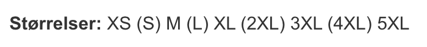
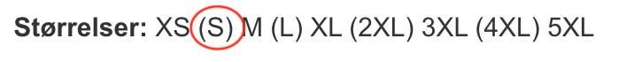

Første gang du ser en strikkeopskrift, tænker du sikkert at: "Det kommer jeg aldrig til at forstå!"
Men frygt ej. Når du læser opskriften igennem nogle gange, begynder du langsomt at forstå hvad du skal i løbet af projektet
Det er en god idé at tage et skridt af gangen, og "bare gøre det der står".
Bare og bare - jeg hjælper dig på vej, så du lærer at læse en strikkeopskrift.
Når du sidder med din strikkeopskrift, er det første du ser størrelser, længde, bredde, strikkefastheden, vejledende pinde samt hvilke materialer der er brugt til den givende opskrift.
Det ser sådan ud:
Når du bladrer gennem strikkeopskriften, støder du på nogle tal - nogle står i parantes, andre gør ikke.
Disse tal beskriver størrelsen fra XS - 5XL. Det ser eksempelvis sådan ud:
Det betyder, at hvis du eksempelvis skal strikke en størrelse S, så skal du bruge det andet tal i rækken. Det andet tal i rækken er gennemgående for hele opskriften.
Det er en god idé at sætte en streg eller ring omkring det tal, du skal strikke efter. Så skal du ikke holde øje med hvilket tal du skal bruge, efterhånden som du kommer frem i opskriften som jeg har gjort her.
